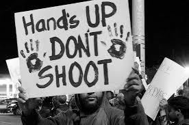

| Home Page | How You Can Help | Stories | Sources |
Police brutality is one of several forms of police misconduct which involves undue violence by police members. It is also the abuse of power by Police brutality is one of several forms of police misconduct which involves undue violence by police members. Widespread police brutality exists in many countries and territories, even those that prosecute it. While it can be done either verbaly or physically, it is more common for the police officer to physically abuse the victim.
Here are seven reasons why police misconduct is a systematic problem, not "a few bad apples."
Police brutality mainly happens in locations with a high population of minorities because they are usually the ones that are affected by police brutality.